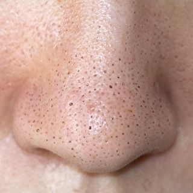
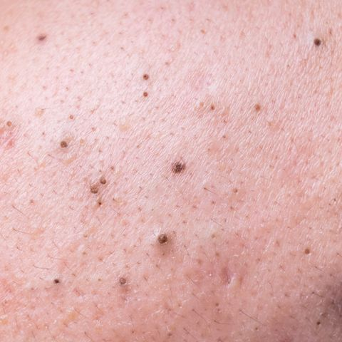
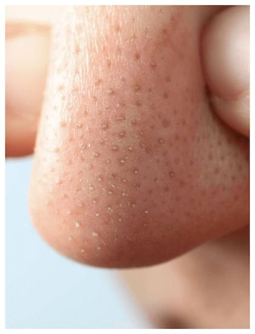
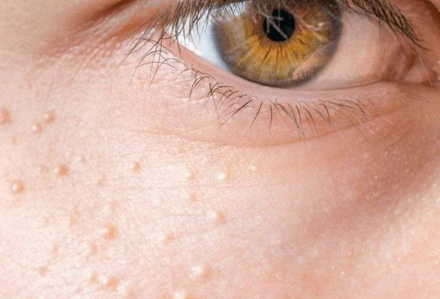
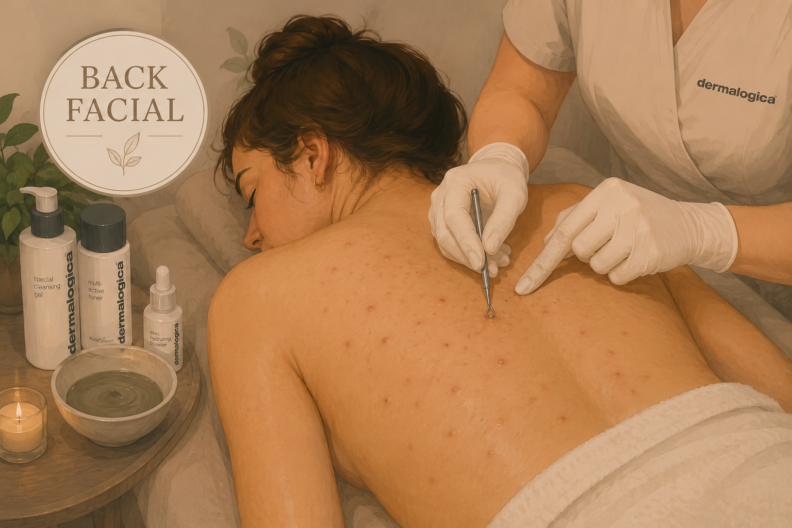

Pormaskar och finnar uppstår när hudens porer täpps till av talg, döda hudceller och bakterier. Det är vanligast på näsa, panna och haka — områden där talgproduktionen är hög.
Med rätt behandling kan vi rengöra porerna på djupet, balansera talgproduktionen och förebygga nya utbrott. Vi anpassar alltid behandlingen efter din hudtyp och dina specifika behov.

Bildas när en por täpps igen av talg och döda hudceller och porens öppning förblir öppen. Den mörka färgen är inte smuts — det är talgen som oxiderar i kontakt med luften och blir svart. Vanligast på näsa, haka och panna i T-zonen där talgproduktionen är högre.

Bildas på samma sätt som svarta pormaskar — talg och döda hudceller täpper igen porer — men porens öppning är stängd av hudceller. Eftersom talgen inte kommer i kontakt med luft oxiderar den inte och förblir vit eller hudfärgad. Syns ofta som små upphöjda knottror, vanligast på kinder, panna och haka.

Små vita eller gula cystor som ligger precis under hudens ytlager. Till skillnad från vita pormaskar innehåller milier keratin (hudprotein) — inte talg — och saknar öppning till hudytan. Vanligast runt ögon, kinder och näsa. Kan inte tömmas manuellt utan måste behandlas med särskild teknik. Läs mer om milier och behandling →

För dig med lätt tilltäppt hud, glåmig ton och enstaka pormaskar. En lugn djuprengörande behandling som balanserar huden, återställer lyster och förbättrar struktur — utförs med Dermalogica.

För dig med pormaskar, tilltäppt hud och återkommande finnar. En djupgående portömningsbehandling som löser upp tilltäppta porer, reducerar inflammation och återställer hudbalansen. Utförs med Dermalogica.

För dig med utbredda pormaskar och tilltäppt hud som kräver mer tid. Samma protokoll som standardbehandlingen men med förlängd och noggrannare portömning. Rekommenderas vid flera områden i ansiktet eller djupare tilltäppning.

För dig som är tonåring eller yngre med tilltäppt hud, pormaskar eller början till akne. En skonsam men effektiv behandling som rengör huden på djupet, balanserar talgproduktionen och förebygger nya orenheter.
Kemiska peelingar är ett effektivt komplement vid pormaskar och tilltäppt hud. De löser upp tilltäppningar i porerna, exfolierar på djupet och stimulerar hudens egen förnyelse — för en klarare och jämnare hud.
Viktigt att veta: Kemisk peeling är ett utmärkt komplement för dig som lider av oren hud — det förebygger framtida utbrott och håller huden i balans över tid. Däremot behöver befintliga pormaskar tömmas manuellt under en ansiktsbehandling med portömning för att huden ska bli ren. Många kombinerar därför båda för bästa resultat.

En avancerad TCA-baserad peeling som arbetar antibakteriellt, exfolierande och cellförnyande på djupet. Löser upp tilltäppta porer, balanserar huden och stimulerar hudens egen förnyelseprocess — utan kraftig fjällning.
 BioRePeel
BioRePeel
En aktiv exfolierande peeling med kombinationen AHA-, BHA- och PHA-syror som rengör porer, reducerar orenheter och förbättrar hudens struktur. Passar dig med pormaskar, ojämn hudton eller tidiga ålderstecken.
En resultatinriktad kemisk peeling som anpassas efter din hud. Stimulerar cellförnyelse, förbättrar hudens struktur och ger klarare hudton. Passar dig med pormaskar, glåmig hud eller lätt akne.
Pormaskar och finnar är vanligt även på ryggen. Vår Back Facial är en djuprengörande behandling utformad specifikt för ryggens hud — med portömning, ånga och lugnande efterbehandling.

En komplett djuprengörande behandling för ryggen som kombinerar ånga, exfoliering, portömning och mask för en renare, klarare och mer balanserad hud. Rekommenderas vid pormaskar, tilltäpptheter eller ojämn hudstruktur.
En förlängd och mer avancerad variant för dig med mycket pormaskar, akne eller kraftigare tilltäppning. Inkluderar förlängd portömning samt möjlighet att lägga till BioRePeel för djupare hudförbättring.
Vi börjar med en djuprengöring följt av exfoliering och ånga som mjukar upp huden och öppnar porerna. Sedan tömmer vi porerna manuellt med steril lansett och klämteknik. Behandlingen avslutas med antibakteriell högfrekvens och en lugnande mask för att minimera rodnad och förebygga inflammation.
Det beror på hudens tillstånd och ålder. Vid lätta pormaskar och frisk hud är Skin Reset Facial ett bra val. Vid mer omfattande tilltäppning eller akne rekommenderar vi Advanced Acne Detox. Är du tonåring eller yngre passar Teen Skin Clear — för yngre hud är regelbundna portömningar och bra hudvård ofta mer effektivt än kemiska peelingar. Boka gärna en konsultation om du är osäker.
Ja, många kombinerar portömning (ansiktsbehandling) med kemisk peeling för bästa resultat. Portömningen löser det akuta — själva pormaskarna — medan peelingen förebygger nya utbrott över tid. Vi planerar gärna en behandlingskur tillsammans.
Båda bildas när porer täpps igen av talg och döda hudceller. Svarta pormaskar har öppna porer — talgen oxiderar i kontakt med luft och blir mörk. Vita pormaskar har stängda porer, så talgen förblir vit eller hudfärgad. Båda behandlas på samma sätt: med portömning och kemisk peeling.
Pormaskar uppstår av flera anledningar: överproduktion av talg (genetiskt eller hormonellt), brist på exfoliering, fel hudvårdsrutin (för rika krämer eller fel produkter), kostvanor, stress eller bristande rengöring. Hos vissa är det också en kombination av flera faktorer. Vi kan hjälpa dig identifiera orsaken under en konsultation.
Vi rekommenderar starkt att du inte klämmer själv. Fel teknik kan trycka talg djupare ner i huden, orsaka inflammation, ärrbildning eller mörka fläckar (postinflammatorisk hyperpigmentering). Vi använder steril utrustning och rätt teknik för att tömma porerna säkert utan att skada huden.
Pormaskar innehåller talg och döda hudceller, milier innehåller keratin (hudprotein). Milier har heller ingen öppning till hudytan vilket gör att de inte kan tömmas manuellt på samma sätt som pormaskar. Läs mer om milier här →
Pormaskarna vi tömmer försvinner direkt — men ett litet rött märke kan stanna kvar i några dagar efter behandlingen. Antalet behandlingar du behöver beror på vad vi gör och hur din hud ser ut. Nya utbrott kan ändå komma över tid eftersom pormaskar är ett återkommande tillstånd — därför är regelbundna besök och rätt hemvård avgörande för att hålla huden i balans.
Vi arbetar med Dermalogica och Dermaceutic och rekommenderar produkter individuellt baserat på din hud. Nyckelingredienser är salicylsyra (BHA) som löser upp talg i porerna, niacinamid som reglerar talgproduktionen, och retinol som främjar cellförnyelse. Vi sätter ihop en personlig hudvårdsrutin under behandlingen.
Undvik smink första 24 timmarna. Inga starka syror, retinol eller exfoliering i 5–7 dagar. Träna ej, undvik bastu och solning första dygnet. Använd SPF 50 dagligen — solskydd är avgörande för resultatet. Pilla inte på huden, även om det kliar.
Ja, det är just då behandlingen ofta gör mest nytta. Vid mycket inflammerade utbrott eller cystisk akne kan vi behöva anpassa behandlingen eller starta med en mildare variant. Vid osäkerhet rekommenderar vi en konsultation först.
"Isabella är så duktig och jättetrevlig. Man känner sig så omhändertagen. Lätt att prata med och riktigt professionellt!"
Google"Trevligt och proffsigt bemötande."
Google"Jättebra resultat! Supernöjd!"
Google"Trevligt bemötande och skön, anpassad behandling."
Bokadirekt"Isabella är mycket kundserviceinriktad och kunnig. Hon bryr sig om sina kunder och vägleder en. Mycket nöjd och rekommenderar henne varmt."
Bokadirekt"Bästa bästa – allt fungerar smidigt, bra bemötande och bra resultat. Jag har fått allt jag önskat. Isabella är bäst, trevlig och professionell. Fantastisk!"
BokadirektBoka en konsultation så bedömer vi din hud och rekommenderar bästa behandlingsupplägg.
Klicka på det område du vill boka.
Klicka på det område du vill boka.
Boka direkt eller välj tillval i nästa steg.
Boka direkt eller lägg till LED-terapi för ett lugnare resultat.
Boka direkt eller välj tillval i nästa steg.